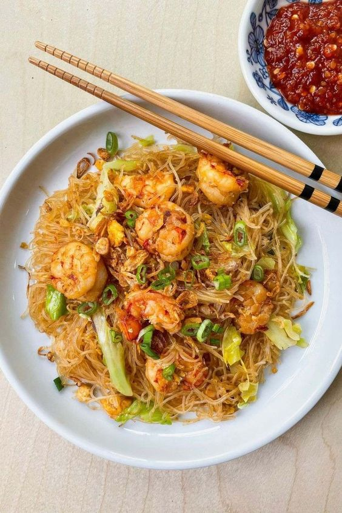

Bihun Seafood

Bihun seafood adalah hidangan mie bihun yang diperkaya dengan berbagai jenis seafood, seperti ikan, udang, cumi-cumi, dan kerang. Hidangan ini biasanya dimasak dengan bumbu-bumbu dan saus yang kaya rasa, sehingga menghasilkan hidangan yang lezat dan gurih. Berikut cara membuat Bihun Seafood :
Bahan :
- 200 gram bihun kering, seduh air panas
- 150 gram cumi - cumi iris bulat
- 150 gram udang kupas, belah punggung dan bersihkan
- 150 gram bakso ikan, iris
- 5 - 6 sdm minyak goreng
- 8 siung bawang putih, cincang
- 4 butir telur kocok
- 100 gram batang caisim potong kecil, seduh air panas , dan tiriskan
- 2 batang daun bawang, iris
- saus bumbu
- 4 sdm kecap manis
- 4 sdm kecap asin
- 2 sdm saus tiram
- 1 sdt minyak wijen
- 1/2 sdt merica bubuk
Bumbu Kacang :
- 150 gram kacang tanah
- 1 sdm gula merah
- 1 siung bawang putih
- 4 buah cabai rawit mearah
- 1/2 sdt garam
- 2 sdm air asam jawa
- air matang secukupnya
Cara Membuat Bihun Seafood :
- Panaskan minyak dalam wajan di atas api sedang. Tumis bawang putih hingga harum.
- Besarkan api, masukkan cumi-cumi, udang dan bakso ikan aduk hingga udang berubah warna.
- Masukkan cumi-cumi dan udang ke pinggir wajan, masukkan telur kocok. Tunggu sampai pinggiran telur agak mengental. Aduk rata.
- Masukkan saus bumbu ke dalam wajan. Aduk hingga bumbu beraroma. Masukkan caisim dan daun bawang, aduk. Masukkan bihun, aduk dan masak hingga matang, angkat.
- Pindahkan bihun ke atas piring daji. Bihun seafood siap di hidangkan